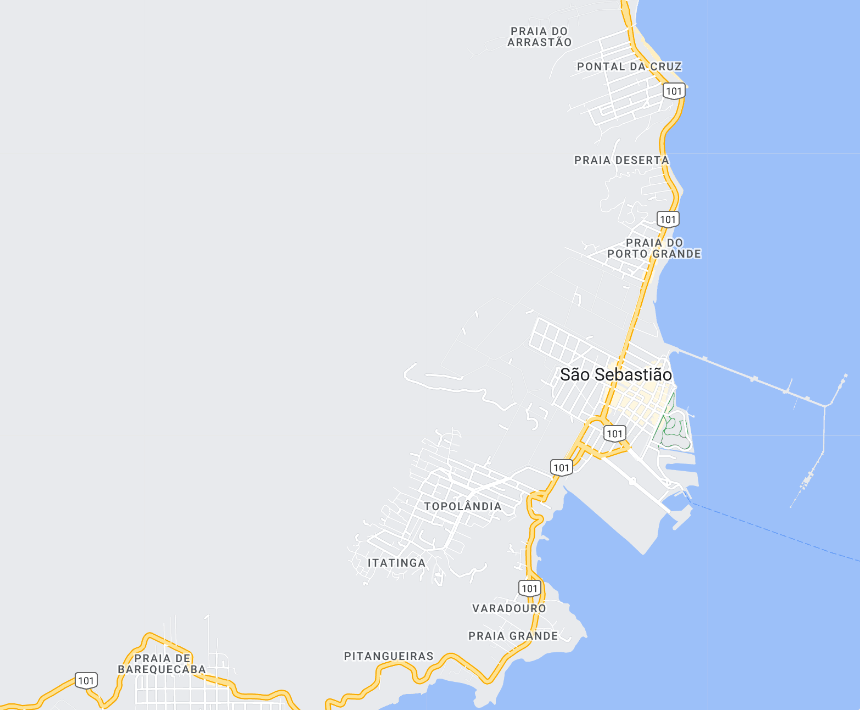

São Sebastião - Geodex

Município de São Sebastião
-
Populacão: 91.637 pessoas
-
Área: 402,395km²
-
Fundação: 16 de Março de 1636
-
Distância da Capital: 197km
São Sebastião, uma cidade localizada no litoral norte do estado de São Paulo, tem uma história que remonta ao período colonial. Fundada em 1636, inicialmente com o nome de Aldeia de São Sebastião, foi um importante centro de produção de cana-de-açúcar e exportação de produtos agrícolas, especialmente durante o ciclo da cana-de-açúcar. Ao longo dos anos, a cidade enfrentou períodos de prosperidade e declínio econômico, sofrendo com ataques de piratas, epidemias e enchentes. No século XX, o turismo começou a ganhar importância, impulsionado pelas belas praias e pela rica história da região. Atualmente, São Sebastião é reconhecida como uma cidade turística, que preserva seu patrimônio histórico e cultural, oferecendo aos visitantes belas praias, natureza exuberante e uma atmosfera encantadora.